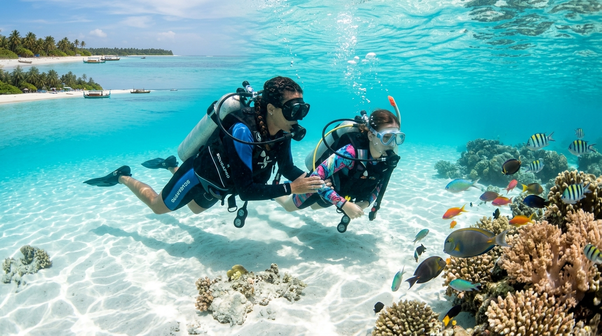

Whether you are a beginner looking for your first underwater adventure or an experienced diver wanting to explore Agatti's marine environment, our diving experiences are designed to make your time in the water exciting, comfortable, and memorable.
Discover the Beauty of Scuba Diving in Agatti
Agatti Island is surrounded by beautiful lagoons and tropical waters that create an exciting environment for underwater exploration. Away from the beaches, a completely different world awaits beneath the surface.
With scuba diving in Agatti, you can experience the marine environment from a unique perspective while enjoying professional guidance throughout your dive.
Why Choose Agatti for Your Diving Adventure?
From the moment you enter the water, the peaceful surroundings and marine life create an experience that can become one of the highlights of your Lakshadweep holiday.

Experience Scuba Diving in Agatti Island with Lak Sea Adventures
Your diving experience should be more than simply entering the water. At Lak Sea Adventures, we focus on making the entire experience comfortable, enjoyable, and safe.
Before the dive, our team explains the equipment, basic diving techniques, and important safety instructions. Once you are ready, your instructor guides you through the experience and helps you explore the underwater surroundings according to your comfort and experience level.
Scuba diving in Agatti island is an excellent choice for travellers who want to add adventure to their island holiday without compromising on professional support.
What Can You See While Diving in Agatti?
The waters around Agatti offer opportunities to observe a variety of tropical marine life. Depending on the diving location, season, and sea conditions, you may encounter colourful reef fish, coral formations, turtles, rays, and other marine species.
Underwater Highlights in Agatti
- Vibrant coral formations: Massive table corals, brain corals, and swaying gorgonian fans.
- Tropical reef fish: Clownfish (Nemo), butterflyfish, parrotfish, bannerfish, and blue tangs.
- Beautiful underwater landscapes: Shallow sunlit lagoons, submarine slopes, and dramatic outer reef walls.
- Marine creatures in their natural habitat: Hawksbill sea turtles, eagle rays, stingrays, and harmless reef sharks.
- Opportunities for underwater photography: High-definition 4K photography and video to capture every moment.
- A peaceful and immersive ocean experience: Weightless tranquility away from everyday hustle.
Every dive can offer something different, making the underwater environment one of the most exciting parts of an Agatti adventure.
Agatti Scuba Diving for Beginners
Never tried scuba diving before? You don't need to be an experienced diver to discover the underwater world.
Our beginner-friendly diving experiences introduce you to the essential aspects of scuba diving before you enter the water. Your instructor will explain how the equipment works, how to breathe underwater, and how to communicate during the dive.
Shallow water training is also provided, allowing you to practise basic diving skills in calm and controlled water before starting your actual dive. This helps you become familiar with the equipment, maintain proper breathing, and feel more comfortable underwater.
What Beginners Can Expect
- Introduction to scuba diving equipment: Learn how masks, regulators, buoyancy control devices (BCD), and fins work.
- Pre-dive safety briefing: Simple ear-equalization techniques and hand signals explained clearly.
- Professional instructor guidance: Personalized one-on-one attention throughout your lagoon immersion.
- Basic underwater communication: Intuitive gestures to stay in sync with your divemaster at all times.
- Supervised underwater experience: Calm, safe descent at depths suited precisely to your comfort.
- Comfortable pace suitable for beginners: Never rushed; we dive at your individual speed.
The aim is to help you feel comfortable and confident before you begin exploring beneath the surface.

Diving Experiences for Certified Divers
Experienced and certified divers can enjoy a different kind of underwater adventure around Agatti. Depending on experience and prevailing conditions, suitable diving locations can be selected for a more personalised experience.
Certified divers can focus on exploring the underwater environment, observing marine life, and enjoying the natural reef landscape. From outer lagoon drop-offs to drift dives along reef channels, Agatti provides world-class dive profiles.
Whether you are visiting Agatti for the first time or returning to explore more of Lakshadweep, diving can add a memorable adventure to your trip.
Why Choose Lak Sea Adventures?
At Lak Sea Adventures, we believe that a great diving experience combines adventure, professional support, and attention to safety.
What Makes Our Diving Experience Special?
- Professional diving guidance: Certified PADI Master Scuba Divers and local island divemasters.
- Quality diving equipment: Regularly serviced, internationally certified scuba gear and compressors.
- Experiences for different skill levels: Programs tailored from first-time Discover Scuba Diving to Open Water Diver and Divemaster courses.
- Beginner-friendly instruction: Patient, friendly guidance designed to build water confidence.
- Attention to safety and comfort: Thorough briefings, small guide-to-diver ratios, and oxygen safety kits on board.
- Suitable diving locations based on conditions: Daily site selection based on tides, currents, and visibility.
- Assistance throughout your diving experience: Complete logistics, gear sizing, permit guidance, and travel planning.
Our team considers factors such as weather, sea conditions, participant experience, and comfort when planning diving activities.
Experience Lakshadweep with the Experts
Explore Lakshadweep with experienced local experts and enjoy unforgettable diving, water adventures, marine life, and island experiences.
- 500+ PADI Certifications Issued: Decades of combined instructional excellence training divers from across the globe.
- 15+ Pristine Dive Sites Explored: Exclusive access to untouched reef zones across Agatti, Bangaram, and Thinnakara atolls.
- 100% Safety Record Maintained: Uncompromised international safety standards followed on every single dive.
- 5-Star PADI Dive Resort: The trusted ocean headquarters on Agatti Island, Lakshadweep.
What Makes Agatti a Great Diving Destination?
Agatti combines beautiful tropical surroundings with an interesting underwater environment, making it an attractive destination for diving enthusiasts. It is easy to travel to Agatti and enjoy scuba diving, with no additional charges required when you arrive at Agatti for your diving experience. The simple travel process and easy diving experience make Agatti a convenient choice for both beginners and experienced divers.
Crystal-Clear Tropical Waters
- Enjoy the natural beauty of Agatti's turquoise waters.
- Experience underwater visibility reaching up to 30 meters when conditions are favourable.
- Explore the peaceful marine environment free of heavy boat traffic.
Colourful Coral Reefs
- Discover fascinating hard and soft coral formations.
- Observe healthy, intact reef habitats protected by local conservation.
- Experience natural underwater caves, swim-throughs, and sandy channels.
Fascinating Marine Life
- Spot colourful tropical reef fish in their thousands.
- Look for sea turtles and stingrays gliding over the seabed.
- Observe marine creatures living undisturbed in their natural surroundings.
A Memorable Island Adventure
- Combine beachfront relaxation with thrilling underwater exploration.
- Add an exciting bucket-list activity to your Lakshadweep holiday.
- Experience Agatti from both above the turquoise water and beneath the surface.
- Create memorable moments that will last a lifetime.
When Is the Best Time for Scuba Diving in Agatti?
The diving experience can depend on weather, sea conditions, and underwater visibility. Suitable conditions can make your time in the water more comfortable and enjoyable. The prime season for scuba diving in Agatti runs from October through May, when the Arabian Sea is calm, skies are clear, and lagoon visibility is at its peak.
Before each activity, our team considers the prevailing conditions and selects the most appropriate option for the day's diving experience:
Since conditions can change, the timing or diving location may occasionally be adjusted to provide a safer and better experience.
Explore Lakshadweep Beneath the Surface
Lakshadweep is famous for its turquoise lagoons, white sandy beaches, and peaceful islands. But the beauty of the destination does not stop at the shoreline.
Lakshadweep islands scuba diving allows you to discover the underwater side of the archipelago and experience its marine environment from a completely different perspective.
Agatti is an excellent choice for travellers who want to combine relaxation and adventure in one holiday. Spend your day enjoying the island, enjoying authentic homestays or beach resorts, and then discover its underwater world with Lak Sea Adventures.
Your Agatti Diving Adventure Starts Here
Your trip to Agatti can be more than a beach holiday. Explore the island above the water and discover its hidden beauty below the surface.
With scuba diving in Agatti, you can experience colourful marine life, fascinating coral formations, and the peaceful underwater environment of Lakshadweep.
Ready to Explore Agatti Underwater?
- Choose your preferred diving experience (Introductory dive or PADI course)
- Check availability for your travel dates and island permits
- Ask about current package prices and special group offers
- Get professional guidance from our certified team
- Prepare for your unforgettable underwater adventure
Dive into Agatti. Explore beneath the surface. Create memories that last beyond your Lakshadweep trip.